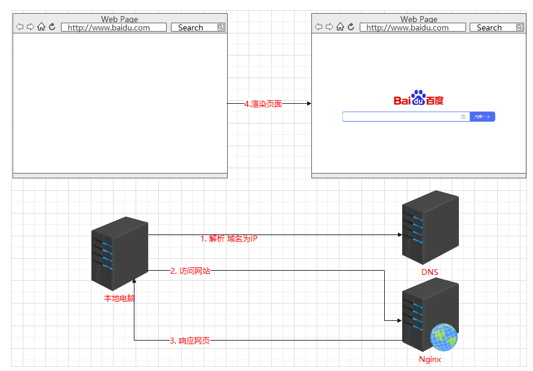
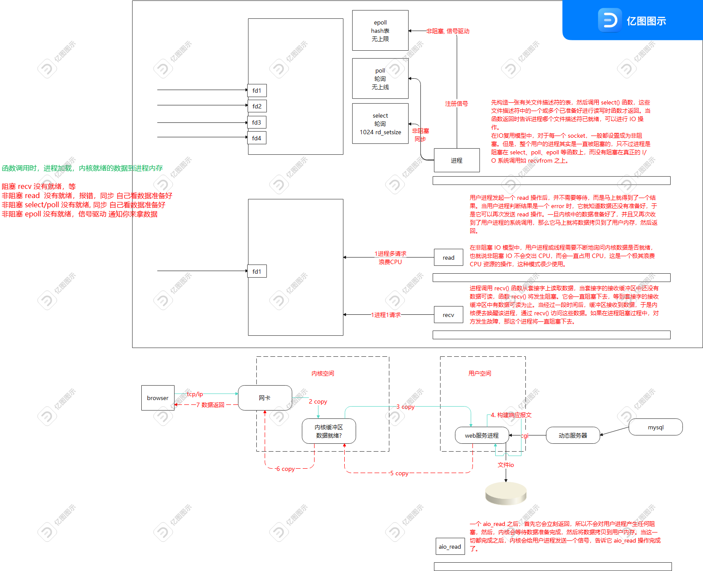
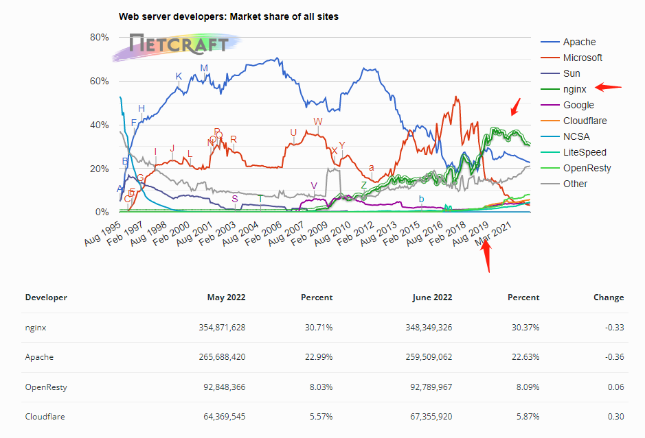
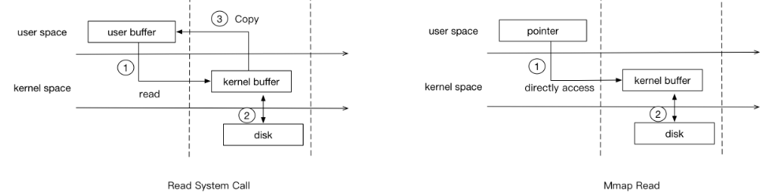
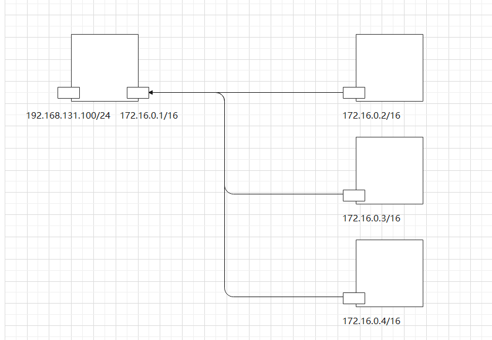
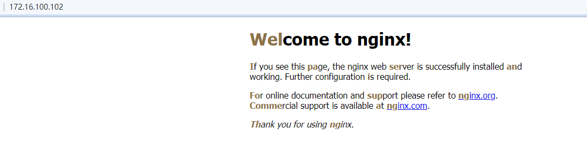

回顾
上一节中，我们讲了[ https://slcnx.github.io/2022/06/12/vmware%E5%AE%89%E8%A3%85%E7%B3%BB%E7%BB%9F/ ], vmware安装规划中，如何单机部署, 高可用部署。 本节讲讲其中一个小服务nginx，nginx用来提供公司网页的，基于用户体验的过程的原理如下：

这里电脑从输入www.baidu.com到查看到百度，这一个过程中，需要本地计算机**浏览器**发起http请求，请求支持http协议的**web服务器**，拿到http响应。http协议规范定义了**请求和响应**的格式，[ https://developer.mozilla.org/zh-CN/docs/Web/HTTP/Messages ]， 而http协议是一种规范其实现是具体的软件，其客户端软件， 图形界面的浏览器(chrome, 360, firefox)，命令行的curl命令。而服务端软件有httpd, nginx。
我们在上一节中使用nginx作为静态站点，而没有使用apache的httpd，其原因就需要对比这两个软件的区别了。
nginx和apache的区别
请求到达服务器处理

参考: [ https://www.modb.pro/db/401325 ]
浏览器请求到Linux服务器，基于请求的端口到达用户空间的进程，进程处理http协议的请求，基于URI解析协议, 域名，路径。从而找到对应的处理请求的配置，再加载合适的文件或代理到合适的后端应用服务器。
- 动态请求，基于相应的协议获取数据。
- 静态请求，需要读磁盘上的文件，就需要发起系统调用，内核加载数据到内核空间，进程从内核空间将数据拷贝到用户空间。这个是一次文件IO
请求到达用户空间的web进程的几种方式
阻塞式IO
- 请求数据未完全被内核加载到缓冲区时，进程是阻塞的。进程不占用CPU，并在等待队列中。直到数据加载完成，一次中断事件让内核把等待队列中的进程唤醒到达运行队列，这个时间进程才拿到数据，进行处理数据。
- 一个进程处理一个请求
非阻塞IO
由于阻塞式IO不能处理多个请求，所以有了IO多路复用，专用于处理多个请求，io多路复用，支持select/poll/epoll。
select
- 很多系统均支持
- 进程调用select之后，就和非阻塞IO一样，立即知道有没有数据。没有数据做其他的事。有数据就下一次问select时就拿到数据加载数据到内存，进行后续处理。
- select就可以维护多个连接，使用一个数组，要知道数组中哪个连接有新的数据来，需要遍历一次数组，时间复杂度是O(n)。
- select默认的连接上限1024
poll
- windows不支持
- 维护多个连接是链表，没有连接上限。知道哪个连接有数据来是遍历，时间复杂 度是O(n)
epoll
- 进程调用epoll之后，会注册一个信号，这个信号函数会有后续的处理，所以当数据准备好之后，就调用进程的后续函数进行加载数据到用户空间的内存，再处理。
- 维护连接是hash表，知道哪个连接有数据来是遍历，时间复杂 度是O(1)。
以上5种IO模型，在内核准备数据时，进程除了第1个均是非阻塞，非阻塞中除了epoll 信号驱动之外均是同步，即进程轮轮循查看数据是否就绪。在数据准备好之后，均由各自函数加载数据到用户空间，进行处理。
引用自: [ http://chiyuanye.com/2019/02/25/five-IO-models.html ]
而aio_read这个函数是异步的，内核准备数据，数据加载到用户空间进程内存，均由内核完成，完成之后通知进程。进程进行后续操作。
区别
apache有2.2和2.4 这2个版本。均有3个处理模块,（ prefork, work, event ）。
- apache
- prefork, select IO模型
- work, poll IO模型
- event, event IO模型
- nginx
nignx特点： 异步非阻塞IO，解决C10K问题（10K Connections），且是免费的、开源的、⾼性能的HTTP服务器和HTTP反向代理服务器、邮件代理服务器、以及TCP/UDP代理服务器。
Nginx的优势在于：反向代理，静态资源Web服务，rewrite规则，稳定性， 模块化设计，静态文件处理，内存消耗，节省带宽，稳定性高，支持热部署，可以高并发连接等优点。
Netcraft公司于1994年底在英国成⽴，多年来⼀直致⼒于互联⽹市场以及在线安全⽅⾯的咨询服务，其中在国际上最具影响⼒的当属其针对⽹站服务器，域名解析/主机提供商，以及SSL市场所做的客观严谨的分析研究。
[ https://news.netcraft.com/ ] nginx 自19起始稳居第1。而之前一直是apache占主导地位。

引用自: [ https://zhangzhuo.ltd/articles/2021/05/17/1621240754222.html ]
nginx介绍
模块化设计，较好的扩展性 高可靠性 支持热部署：不停机更新配置⽂件，升级版本，更换⽇志⽂件 低内存消耗：10000个keep-alive连接模式下的⾮活动连接，仅需2.5M内存 event-driven,aio,mmap，sendfile

mmap要比普通的read系统调用少了一次copy的过程。因为read调用，进程是无法直接访问kernel space的，所以在read系统调用返回前，内核需要将数据从内核复制到进程指定的buffer。但mmap之后，进程可以直接访问mmap的数据(page cache)。第2个阶段 kernel > user space不需要了。
引用自: [ https://blog.csdn.net/universsky2015/article/details/115114706 ]
作为web服务器的时候打开sendfile加快静态⽂件传输，指定是否使⽤sendfile系统调⽤来传输⽂件,sendfile通过DMA(直接内存访问)⽅式直接访问⽂件数据，并通过传输协议发送，从⽽避免了数据在内核缓冲区和⽤户缓冲区之间的拷⻉，操作效率很⾼，被称之为零拷⻉，从硬盘>kernel>user space封装>kernel>协议栈，直接到: 硬盘>> kernel buffer (快速拷⻉到kernel socket buffer) >>协议栈。
环境初始化
准备nginx主机
实验归划

| IP |
主机名 |
用途 |
备注 |
| 172.16.100.100 |
template-centos.magedu.com |
模板机 |
|
| 172.16.100.101 |
nginx-1.magedu.com |
|
|
| 172.16.100.102 |
nginx-2.magedu.com |
|
|
| 172.16.100.103 |
nginx-3.magedu.com |
|
|
| 172.16.100.104 |
nginx-4.magedu.com |
|
|
| 172.16.100.105 |
nginx-5.magedu.com |
|
|
| 172.16.100.106 |
nginx-6.magedu.com |
|
|
| 172.16.100.107 |
nginx-7.magedu.com |
|
|
| 172.16.100.108 |
nginx-8.magedu.com |
|
|
| 172.16.100.109 |
nginx-9.magedu.com |
|
|
| 172.16.100.110 |
nginx-10.magedu.com |
|
|
| 172.16.100.111 |
php-1.magedu.com |
|
|
| 172.16.100.112 |
php-2.magedu.com |
|
|
| 172.16.100.113 |
php-3.magedu.com |
|
|
| 172.16.100.114 |
php-4.magedu.com |
|
|
| 172.16.100.115 |
php-5.magedu.com |
|
|
| 172.16.100.116 |
php-6.magedu.com |
|
|
| 172.16.100.117 |
php-7.magedu.com |
|
|
| 172.16.100.118 |
php-8.magedu.com |
|
|
| 172.16.100.119 |
php-9.magedu.com |
|
|
| 172.16.100.120 |
php-10.magedu.com |
|
|
| 172.16.100.121 |
mysql-1.magedu.com |
|
|
| 172.16.100.122 |
mysql-2.magedu.com |
|
|
| 172.16.100.123 |
mysql-3.magedu.com |
|
|
| 172.16.100.124 |
mysql-4.magedu.com |
|
|
| 172.16.100.125 |
mysql-5.magedu.com |
|
|
| 172.16.100.126 |
mysql-6.magedu.com |
|
|
| 172.16.100.127 |
mysql-7.magedu.com |
|
|
| 172.16.100.128 |
mysql-8.magedu.com |
|
|
| 172.16.100.129 |
mysql-9.magedu.com |
|
|
| 172.16.100.130 |
mysql-10.magedu.com |
|
|
准备网络, vmnet9, 172.16.0.0/16 网络。
克隆 最初，调整配置，快照初始，准备模板主机
初始化主机为模板主机。
1
| bash init.sh --resourceslimit=1 --kernelparams=1 --basepkgs=1 --chinese=0 --eth0=1 --umirror=0 --port=6655 --allow-root-login=yes --allow-pass-login=yes --root-password='#^DzGp)DIN+1M)' --hostname=template-centos.magedu.com --ipaddr=172.16.100.100 --netmask=255.255.0.0 --gateway=172.16.100.2 --dns=223.6.6.6 --author=songliangcheng --qq=2192383945 --desc="A test toy"
|
1
2
| rm -f /etc/sysconfig/network-scripts/ifcfg-ens33
reboot
|
修改网络
准备网关
1
2
3
4
5
6
7
|
TYPE=Ethernet
BOOTPROTO=static
DEVICE=eth1
ONBOOT=yes
IPADDR=172.16.0.2
NETMASK=255.255.0.0
|
1
2
| sysctl -w net.ipv4.ip_forward=1
iptables -t nat -I POSTROUTING -s 172.16.0.0/16 -o eth0 -j MASQUERADE
|
现在ping www.baidu.com
1
2
3
4
5
6
7
8
9
10
11
12
|
[root@template-centos ~]
tcpdump: listening on eth0, link-type EN10MB (Ethernet), capture size 262144 bytes
20:22:32.070572 IP (tos 0x0, ttl 64, id 18283, offset 0, flags [DF], proto ICMP (1), length 84)
172.16.100.100 > 110.242.68.4: ICMP echo request, id 1485, seq 28, length 64
20:22:32.113527 IP (tos 0x0, ttl 127, id 30763, offset 0, flags [none], proto ICMP (1), length 84)
110.242.68.4 > 172.16.100.100: ICMP echo reply, id 1485, seq 28, length 64
192.168.131.100 > 110.242.68.4: ICMP echo request, id 1485, seq 62, length 64
20:23:06.167984 IP (tos 0x0, ttl 128, id 30800, offset 0, flags [none], proto ICMP (1), length 84)
110.242.68.4 > 192.168.131.100: ICMP echo reply, id 1485, seq 62, length 64
|
172.16.100.100 -> 192.168.131.100 -> 110.242.68.4 （修改源为网关的可以出去的IP）
172.16.100.100 <- 192.168.131.100 <- 110.242.68.4 ( 修改目标为内网IP)
重启验证ip, 域名解析, kernel params, crontab, ssh, alias
关机快照。template,
准备第1个节点
1
2
3
| bash init.sh --hostname=nginx-1.magedu.com --ipaddr=172.16.100.101 --netmask=255.255.0.0 --gateway=172.16.100.2 --dns=223.6.6.6 --root-password='7HmqYhjwvNBuYW2X'
reboot
验证ip,网络, 主机名
|
编译安装nginx
https://nginx.org/en/download.html
Stable version nginx-1.22.0
制作rpm
进入nginx的源码仓库: [ http://nginx.org/packages/centos/7Server/SRPMS/ ]
下载安装geoip
1
2
3
| wget http://nginx.org/packages/centos/7Server/SRPMS/nginx-module-geoip-1.22.0-1.el7.ngx.src.rpm
rpm -ivh nginx-module-geoip-1.22.0-1.el7.ngx.src.rpm
|
准备yum-utils
1
| yum install yum-utils rpm-build -y
|
构建rpm包
1
2
3
4
5
6
| cd /root/rpmbuild/SPECS
cpp e2fsprogs e2fsprogs-libs gcc GeoIP GeoIP-devel geoipupdate glibc glibc-common glibc-devel glibc-headers kernel-headers keyutils-libs-devel krb5-devel krb5-libs libcom_err libcom_err-devel libgcc libgomp libkadm5 libmpc libselinux libselinux-devel libselinux-python libselinux-utils libsepol-devel libss libverto-devel mpfr openssl openssl-devel openssl-libs pcre2 pcre2-devel pcre2-utf16 pcre2-utf32 pcre-devel zlib zlib-devel
|
rpmbuild -bb nginx-module-geoip.spec
# rpm
[root@localhost SPECS]# ls ../RPMS/x86_64/
nginx-module-geoip-1.22.0-1.el7.ngx.x86_64.rpm nginx-module-geoip-debuginfo-1.22.0-1.el7.ngx.x86_64.rpm
rpmbuild -bb nginx
得到依赖
1
| cpp e2fsprogs e2fsprogs-libs gcc GeoIP GeoIP-devel geoipupdate glibc glibc-common glibc-devel glibc-headers kernel-headers keyutils-libs-devel krb5-devel krb5-libs libcom_err libcom_err-devel libgcc libgomp libkadm5 libmpc libselinux libselinux-devel libselinux-python libselinux-utils libsepol-devel libss libverto-devel mpfr openssl openssl-devel openssl-libs pcre2 pcre2-devel pcre2-utf16 pcre2-utf32 pcre-devel zlib zlib-devel
|
安装rpm之后得到编译参数
1
2
3
4
5
6
7
8
9
10
11
12
13
14
15
16
17
| [root@localhost SPECS]# rpm -ivh ../RPMS/x86_64/nginx-1.22.0-1.el7.ngx.x86_64.rpm
准备中... ################################# [100%]
正在升级/安装...
1:nginx-1:1.22.0-1.el7.ngx ################################# [100%]
----------------------------------------------------------------------
Thanks for using nginx!
Please find the official documentation for nginx here:
* https:
Please subscribe to nginx-announce mailing list to get
the most important news about nginx:
* https:
Commercial subscriptions for nginx are available on:
* https:
|
1
2
3
4
5
6
| [root@localhost SPECS]# nginx -V
nginx version: nginx/1.22.0
built by gcc 4.8.5 20150623 (Red Hat 4.8.5-44) (GCC)
built with OpenSSL 1.0.2k-fips 26 Jan 2017
TLS SNI support enabled
configure arguments: --prefix=/etc/nginx --sbin-path=/usr/sbin/nginx --modules-path=/usr/lib64/nginx/modules --conf-path=/etc/nginx/nginx.conf --error-log-path=/var/log/nginx/error.log --http-log-path=/var/log/nginx/access.log --pid-path=/var/run/nginx.pid --lock-path=/var/run/nginx.lock --http-client-body-temp-path=/var/cache/nginx/client_temp --http-proxy-temp-path=/var/cache/nginx/proxy_temp --http-fastcgi-temp-path=/var/cache/nginx/fastcgi_temp --http-uwsgi-temp-path=/var/cache/nginx/uwsgi_temp --http-scgi-temp-path=/var/cache/nginx/scgi_temp --user=nginx --group=nginx --with-compat --with-file-aio --with-threads --with-http_addition_module --with-http_auth_request_module --with-http_dav_module --with-http_flv_module --with-http_gunzip_module --with-http_gzip_static_module --with-http_mp4_module --with-http_random_index_module --with-http_realip_module --with-http_secure_link_module --with-http_slice_module --with-http_ssl_module --with-http_stub_status_module --with-http_sub_module --with-http_v2_module --with-mail --with-mail_ssl_module --with-stream --with-stream_realip_module --with-stream_ssl_module --with-stream_ssl_preread_module --with-cc-opt='-O2 -g -pipe -Wall -Wp,-D_FORTIFY_SOURCE=2 -fexceptions -fstack-protector-strong --param=ssp-buffer-size=4 -grecord-gcc-switches -m64 -mtune=generic -fPIC' --with-ld-opt='-Wl,-z,relro -Wl,-z,now -pie'
|
抽取部分
1
| ./configure --prefix=/apps/nginx --user=nginx --group=nginx --with-compat --with-file-aio --with-threads --with-http_addition_module --with-http_auth_request_module --with-http_gunzip_module --with-http_gzip_static_module --with-http_random_index_module --with-http_realip_module --with-http_secure_link_module --with-http_slice_module --with-http_ssl_module --with-http_stub_status_module --with-http_sub_module --with-http_v2_module --with-stream --with-stream_realip_module --with-stream_ssl_module --with-stream_ssl_preread_module --with-http_geoip_module=dynamic --with-stream_geoip_module=dynamic
|
编译安装 (ubuntu/centos均可)
1
2
3
4
5
6
7
8
9
10
11
12
13
| [root@nginx-2 ~]
yum install cpp e2fsprogs e2fsprogs-libs gcc GeoIP GeoIP-devel geoipupdate glibc glibc-common glibc-devel glibc-headers kernel-headers keyutils-libs-devel krb5-devel krb5-libs libcom_err libcom_err-devel libgcc libgomp libkadm5 libmpc libselinux libselinux-devel libselinux-python libselinux-utils libsepol-devel libss libverto-devel mpfr openssl openssl-devel openssl-libs pcre2 pcre2-devel pcre2-utf16 pcre2-utf32 pcre-devel zlib zlib-devel -y
./configure --prefix=/apps/nginx \
--user=nginx --group=nginx \
--with-compat --with-file-aio --with-threads \
--with-http_addition_module --with-http_auth_request_module --with-http_gunzip_module --with-http_gzip_static_module --with-http_random_index_module \
--with-http_realip_module --with-http_secure_link_module --with-http_slice_module --with-http_ssl_module \
--with-http_stub_status_module --with-http_sub_module --with-http_v2_module \
--with-stream --with-stream_realip_module --with-stream_ssl_module --with-stream_ssl_preread_module \
--with-http_geoip_module=dynamic --with-stream_geoip_module=dynamic
|
你将看到以下输出
1
2
3
4
5
6
7
8
9
10
11
12
13
14
15
16
17
18
19
| Configuration summary
+ using threads
+ using system PCRE2 library
+ using system OpenSSL library
+ using system zlib library
nginx path prefix: "/apps/nginx"
nginx binary file: "/apps/nginx/sbin/nginx"
nginx modules path: "/apps/nginx/modules"
nginx configuration prefix: "/apps/nginx/conf"
nginx configuration file: "/apps/nginx/conf/nginx.conf"
nginx pid file: "/apps/nginx/logs/nginx.pid"
nginx error log file: "/apps/nginx/logs/error.log"
nginx http access log file: "/apps/nginx/logs/access.log"
nginx http client request body temporary files: "client_body_temp"
nginx http proxy temporary files: "proxy_temp"
nginx http fastcgi temporary files: "fastcgi_temp"
nginx http uwsgi temporary files: "uwsgi_temp"
nginx http scgi temporary files: "scgi_temp"
|
之后，编译安装
1
| make -j $(nproc) && make install -j $(nproc)
|
1
2
3
4
5
| [root@nginx-2 nginx-1.22.0]# cd /apps/nginx/
[root@nginx-2 nginx]# groupadd -g 2022 nginx
[root@nginx-2 nginx]# useradd -u 2022 -s /sbin/nologin nginx -g nginx
[root@nginx-2 nginx]# ./sbin/nginx -g 'daemon off;' # 需要在前台
|
浏览器访问 http://172.16.100.102/

ctrl c 终止后，准备服务脚本
1
2
3
4
5
6
7
8
|
mv /apps/nginx/ /apps/nginx-1.22.0
curl -L https://raw.githubusercontent.com/slcnx/post-precompile/main/post-precompile.sh | bash -s -- -ap /apps/nginx-1.22.0 -s "./sbin/nginx -g 'daemon off;'"
curl -L https://gitee.com/slcnx/post-precompile/raw/master/post-precompile.sh | sed 's/\r//' | bash -s -- -ap /apps/nginx-1.22.0 -s "./sbin/nginx -g 'daemon off;'"
|
添加模块
echo模块
编译方法: [ https://github.com/openresty/echo-nginx-module#installation ]
下载包: [ https://github.com/openresty/echo-nginx-module/releases/tag/v0.62 ]
基于以上的编译二次编译
1
2
3
4
5
6
7
8
9
| ./configure --prefix=/apps/nginx --user=nginx --group=nginx --with-compat --with-file-aio --with-threads --with-http_addition_module --with-http_auth_request_module --with-http_gunzip_module --with-http_gzip_static_module --with-http_random_index_module --with-http_realip_module --with-http_secure_link_module --with-http_slice_module --with-http_ssl_module --with-http_stub_status_module --with-http_sub_module --with-http_v2_module --with-stream --with-stream_realip_module --with-stream_ssl_module --with-stream_ssl_preread_module --with-http_geoip_module=dynamic --with-stream_geoip_module=dynamic --add-module=/usr/local/src/echo-nginx-module-0.62/
make -j $(nproc) && make install -j $(nproc)
nginx -V
systemctl restart nginx
|
ssl模块
引用自: [ https://www.cnblogs.com/Oejfr/p/14902721.html ]
1
| wget https://www.openssl.org/source/openssl-3.0.5.tar.gz
|
1
2
3
4
5
6
7
| ./configure --prefix=/apps/nginx --user=nginx --group=nginx --with-compat --with-file-aio --with-threads --with-http_addition_module --with-http_auth_request_module --with-http_gunzip_module --with-http_gzip_static_module --with-http_random_index_module --with-http_realip_module --with-http_secure_link_module --with-http_slice_module --with-http_ssl_module --with-http_stub_status_module --with-http_sub_module --with-http_v2_module --with-stream --with-stream_realip_module --with-stream_ssl_module --with-stream_ssl_preread_module --with-http_geoip_module=dynamic --with-stream_geoip_module=dynamic --with-openssl=/root/openssl-3.0.5
make -j $(nproc) && make install -j $(nproc)
nginx -V
systemctl restart nginx
|
作业
- 独立完成nginx yum安装，apt安装。
- 独立完成nginx制作rpm，添加echo模块，升级ssl，同时制作rpm。
- 独立完成nginx编译安装，添加echo模块，升级ssl。